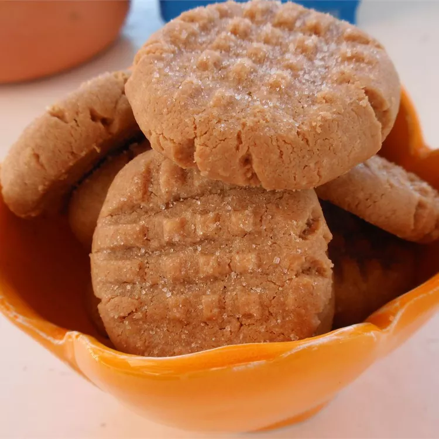

Odin Recipes: Three Ingredient Peanut Butter Cookies

Easy Peanut Butter Cookies
It couldn't be simpler to make this easy peanut butter cookie recipe (you can even memorize it and make it without looking at the recipe!). Here are the three ingredients you'll need:
Ingredients:
- Peanut butter: This recipe starts with one cup of peanut butter. For these cookies, commercial peanut butter (like Jif or Peter Pan) works better than natural brands.
- Sugar: Sweeten things up with one cup of white sugar.
- Egg: One egg lends moisture and helps bind the cookie dough together.
Directions:
- Preheat the oven to 350 degrees F (175 degrees C). Line baking sheets with parchment paper.
- Mix peanut butter, white sugar, and egg in a medium bowl until smooth.
- Roll mixture into 1-inch balls and place 1 inch apart on an ungreased baking sheet; flatten each with a fork, making a criss-cross pattern.
- Bake in the preheated oven until cookies are just barely brown on the bottoms, about 6 to 8 minutes.
- Cool on the baking sheets briefly before removing to a wire rack to cool completely.